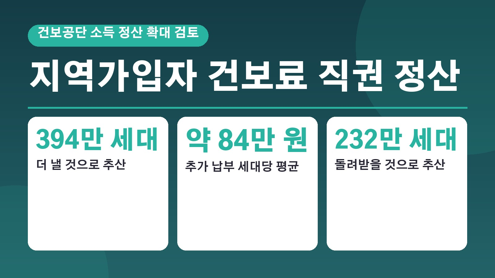
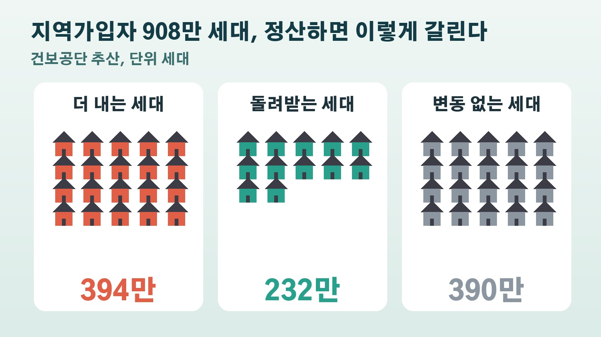

지역가입자 394만 세대 건보료 평균 84만 원 더 낼 수도, 건보공단이 검토하는 소득 직권 정산과 232만 세대 환급

자영업을 하시거나 프리랜서로 일하시는 분, 은퇴 뒤 지역가입자로 건강보험료를 내고 계신 분이라면 20일 전해진 건보료 소식에 마음이 쓰이셨을 거예요. 국민건강보험공단이 지역가입자의 보험료도 실제 소득에 맞춰 해마다 다시 계산하는 방안을 검토하고 있다는 내용입니다. 누가 더 내고 누가 돌려받는지, 지금과 무엇이 달라지는지, 아직 정해지지 않은 부분은 무엇인지 차례로 정리해 볼게요.
건보공단이 검토하는 소득 정산 확대, 핵심은 직권 정산
20일 국민건강보험공단이 국회 보건복지위원회 국정감사에 보고한 업무 추진 현황에 이 내용이 담겼어요. 지금은 지역가입자가 소득이 바뀌었을 때 본인이 신청해야 보험료를 다시 맞출 수 있는데, 앞으로는 공단이 국세청에서 확정된 전년도 소득 자료를 넘겨받아 1년에 한 번 직접 정산하는 방식으로 바꾸겠다는 것이 핵심입니다. 이렇게 신청이 아니라 공단이 알아서 정산하는 것을 직권 정산이라고 불러요.
대상은 지역가입자 908만 세대와, 월급 말고 다른 소득이 있어 따로 건보료를 내는 직장가입자 110만 명입니다. 월급만 받는 직장인은 이미 매년 정산을 하고 있어서 이번 확대 대상이 아니에요. 공단은 가입자가 유리할 때만 골라서 정산을 신청하는 식으로 보험료를 피하는 일을 막고, 부담을 공평하게 하려는 취지라고 설명했습니다.
394만 세대 추가 납부, 232만 세대는 환급
공단이 지역가입자 908만 세대 전체를 분석한 추산을 보면 결과가 꽤 크게 갈립니다. 소득이 늘어 보험료를 더 내야 하는 세대는 394만 세대, 추가로 낼 금액은 모두 3조2911억 원으로 추산됐어요. 한국경제는 이를 추가 납부 세대 한 곳당 평균 약 84만 원으로 계산했습니다.
반대로 소득이 줄어 보험료를 돌려받는 세대도 232만 세대나 되고, 환급 규모는 1조8014억 원입니다. 나머지 390만 세대는 소득 변동이 없어 보험료에 영향이 없는 것으로 나왔어요. 지금 방식에서 2025년에 직접 신청해 환급을 받은 지역가입자가 21만 세대에 그쳤다는 점을 생각하면, 더 내는 사람만 늘어나는 게 아니라 돌려받는 사람도 크게 늘어나는 구조라는 점은 알아 두시면 좋겠어요.
직장인은 이미 하고 있는 정산, 지역가입자는 왜 달랐나
직장가입자는 전년도 보수를 기준으로 보험료를 먼저 낸 뒤, 매년 4월 실제로 받은 급여에 맞춰 정산합니다. 덜 냈으면 더 내고, 많이 냈으면 돌려받는 방식이에요. 올해 4월 정산 때도 8천억 원이 환급되고 4조5천억 원이 추가로 걷혔습니다.

지역가입자는 국세청에서 확인한 소득에 따라 보험료가 바뀌는데, 매년 11월에 전년도 소득 자료를 반영해 다음 해 10월까지 적용하는 구조예요. 그런데 이미 낸 보험료를 실제 소득에 맞춰 다시 따지는 정산은 의무가 아니어서, 본인이 신청하지 않으면 소득이 늘어도 보험료가 그대로이고 소득이 줄어도 돌려받지 못하는 경우가 생겼습니다. 이 차이 때문에 형평성 논란이 이어져 왔다는 것이 공단의 설명이에요.
1.5조 재정 확충과 함께 추진되는 상한과 하한 손질
추가 납부액에서 환급액을 빼면 건보 재정에는 1년에 1조4897억 원이 더 들어오는 것으로 계산됩니다. 공단은 이렇게 늘어나는 돈을 지역 의료와 필수의료 체계 지원, 희귀질환과 중증질환 보장 강화에 쓰겠다는 방침이에요.
재정 사정도 배경으로 꼽힙니다. 한국경제가 인용한 재정경제부 자료에 따르면 건보공단의 부채 비율은 올해 68.5퍼센트에서 2030년 93.4퍼센트까지 오를 것으로 전망됐어요. 공단은 지난 8월에도 보험료 상한과 하한을 함께 손보는 개편안을 건강보험정책심의위원회 소위원회에 보고했는데, 고소득층에게 적용되는 월 보험료 상한 459만 원을 높이고, 2000년 이후 월 28만 원에 묶여 있던 최저보수 기준을 최저임금과 연계해 올리는 내용입니다.
아직 확정 아님, 앞으로 확인할 절차
가장 중요한 점은 이 방안이 아직 정해진 게 아니라는 거예요. 공단은 소득 정산 확대는 추진 여부가 확정되지 않았고, 건강보험정책심의위원회 심의와 법령 개정을 거쳐야 하는 사항이라고 밝혔습니다. 보험료를 더 내야 하는 지역가입자들의 반발이 예상돼 실제 시행까지는 시간이 걸릴 수 있다는 분석도 나왔어요.
그러니 당장 다음 달 고지서가 바뀌는 이야기는 아닙니다. 앞으로는 건강보험정책심의위원회에서 이 안이 어떻게 다뤄지는지, 법 개정안이 나오는지를 지켜보시면 돼요. 지역가입자이거나 월급 외 소득이 있는 직장인이라면 내 소득이 지난해보다 늘었는지 줄었는지에 따라 더 내는 쪽이 될 수도, 돌려받는 쪽이 될 수도 있다는 점을 기억해 두시면 좋겠습니다.
참고한 기사: 연합뉴스TV 건보 소득정산 확대 394만 세대 추가 납부 1.5조 재정 확충 전망 2026년 10월 20일, 한국경제 건보료 84만원 더 내라니 400만 세대 발등에 불 2026년 10월 20일, 동아일보 지역건보 394만가구 3.3조 더 낼 듯 소득정산 확대 추진 2026년 10월 20일
태그
건강보험료 건보료 지역가입자 소득정산 직권정산 국민건강보험공단 건보료환급 자영업자건보료 건강보험재정 건보료상한